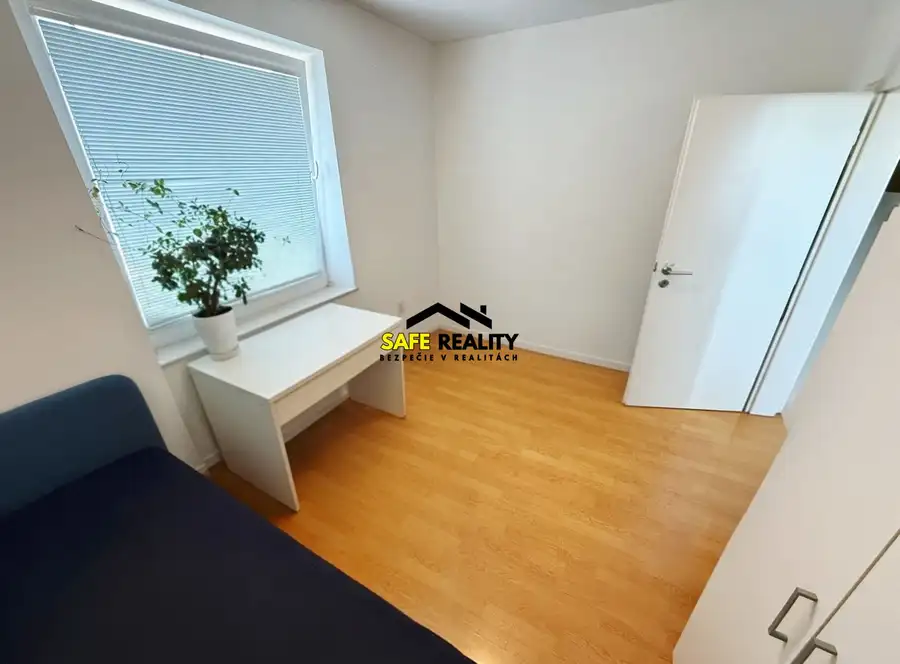
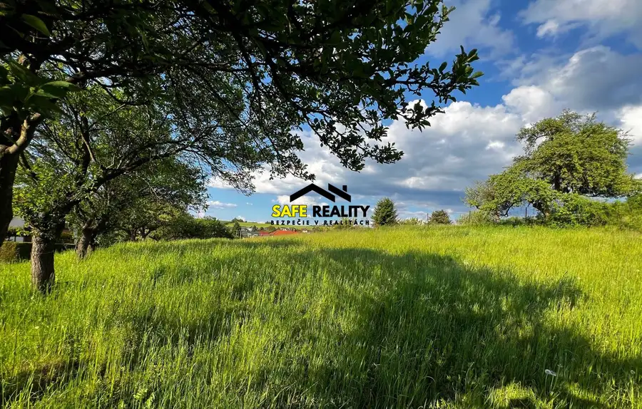
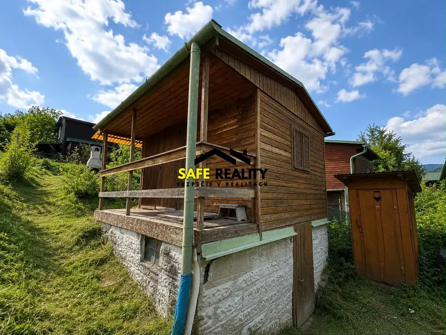
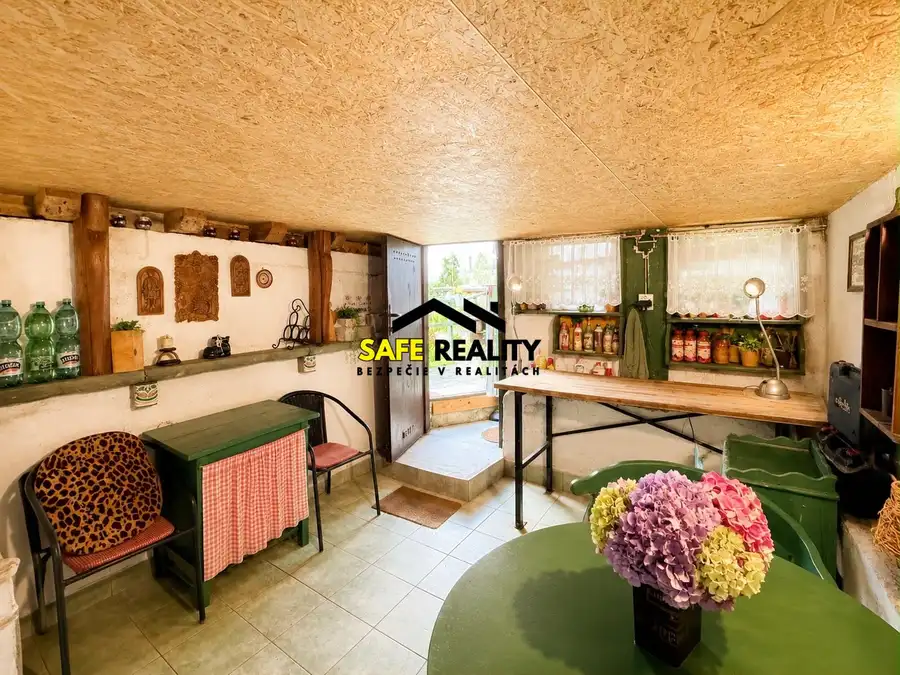
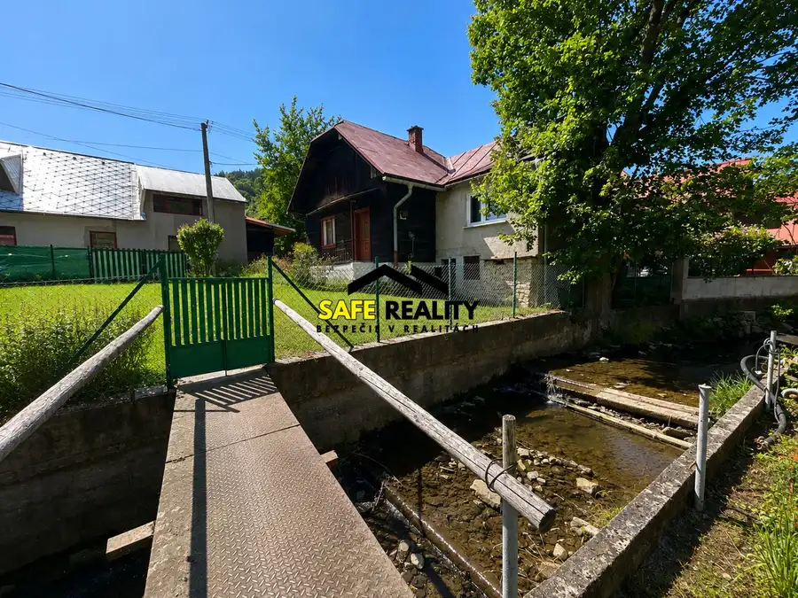
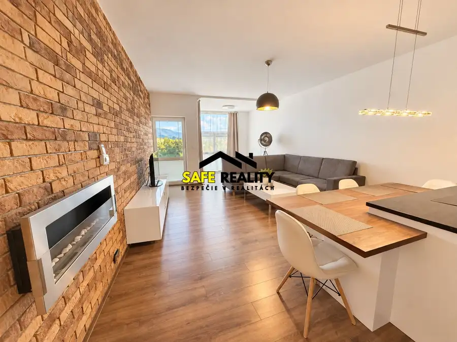
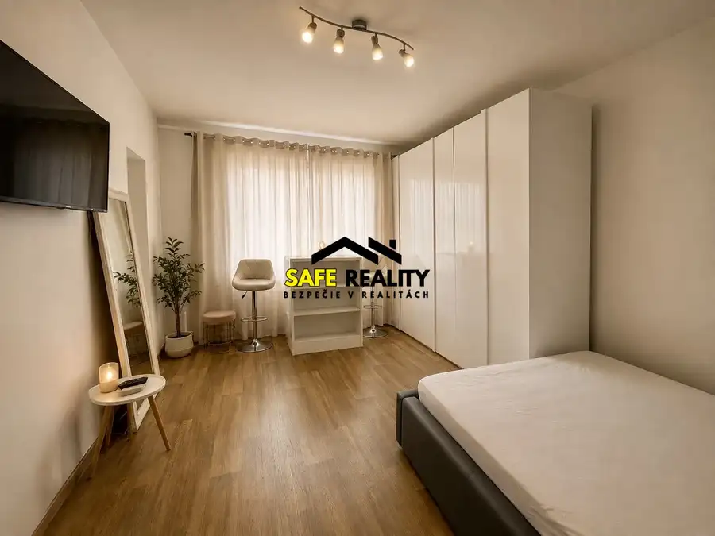
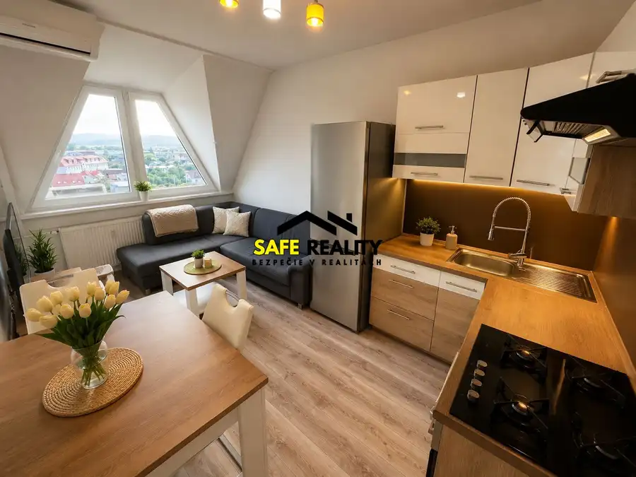

Aktuálna ponuka
Nehnuteľnosti, ktoré ponúkam
8 nehnuteľností na predaj a prenájom. Vyberte typ, alebo napíšte lokalitu.
8 z 8 ponúk

Byt3 187 900 €3+kk v projekte The Cube, Žilina - Vlčince Žilina 3-izbový56 m²7. podlažie Byt je o výmere 50,5m2 + balkón 5m2 + pivnica a nachádza sa na 7. poschodí 13-poschodového bytového domu. Dispozične pozostáva zo vstupnej chodby,…
Pozemok2 159 900 €Stavebný pozemok, Višňové Višňové 721 m² Je o výmere 721m2 a nachádza sa v intraviláne obce. Prístupová cesta je obecná, asfaltová. Inžinierske siete sú v bezprostrednej blízkosti:…
Chaty a chalupy2 29 900 €Záhradná chatka, Mojšova Lúčka Žilina 14 m² Chatka sa nachádza na pozemku s výmerou 435m², ktorý je úpravený do kaskád. Voda je záhradkárska úžitková, elektrina je pripojená aj v chatke,…
Chaty a chalupy10 53 900 €Krásna záhradná chatka, Mojšova Lúčka Žilina 30 m² Vo výhradnej spolupráci Vám ponúkame na predaj útulnú drevenú záhradnú chatu s murovaným suterénom, nachádzajúcu sa v obci Mojšova Lúčka. K chate…
Rodinné domy10 120 000 €Rodinný dom s veľkým pozemkom (1743m) - Ochodnica Ochodnica 3-izbový70 m² Ponúkame Vám starší rodinný dom s veľkou záhradou v obci Ochodnica, ktorý ponúka príjemné a pokojné prostredie a zároveň veľký pozemok s množstvom…
Byt8 244 900 €Prémiový dvojizbový byt, Žilina - Bôrik EURO HOME Žilina 2-izbový71 m²5. podlažie Byt ponúka komfortné bývanie bez potreby ďalších väčších investícií. Má praktickú dispozíciu, vstup je do chodby so šatníkovou stenou, samostatnou…
BytRezervované4 99 900 €Jednoizbový byt, Žilina - širšie centrum Žilina 1-izbový24 m² Vo výhradnej spolupráci Vám ponúkame na predaj 1-izbový byt po čiastočnej rekonštrukcii v meste Žilina, v širšom centre. Byt je o výmere 24m2 a…
BytRezervované6 144 900 €Dvojizbový byt, Bytča Bytča 2-izbový56 m²6. podlažie Byt je o výmere 54m2 + pivnica, a nachádza sa na 6.poschodí 6-poschodového bytového domu. Dispozične pozostáva z priestrannej vstupnej chodby s…Tomuto výberu zatiaľ nezodpovedá žiadna ponuka. Napíšte mi, čo hľadáte.